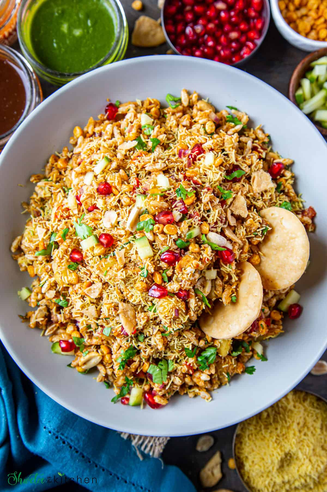

Bhel Puri Recipe

Ingredients
- 2 cups puffed rice (kurmura)
- 1/2 cup sev (crispy gram flour noodles)
- 1/4 cup finely chopped onions
- 1/4 cup finely chopped tomatoes
- 1/4 cup boiled potatoes (diced)
- 2 tablespoons tamarind chutney
- 2 tablespoons green chutney
- 1 teaspoon chaat masala
- 1/2 teaspoon roasted cumin powder
- 1/4 teaspoon red chili powder
- Salt to taste
- Fresh coriander leaves for garnish
Instructions
- In a large mixing bowl, add puffed rice, sev, chopped onions, tomatoes, and boiled potatoes.
- Pour in the tamarind chutney and green chutney.
- Sprinkle chaat masala, roasted cumin powder, red chili powder, and salt.
- Mix everything together gently to coat the puffed rice and vegetables with the chutneys and spices.
- Garnish with fresh coriander leaves.
- Serve immediately for a crispy and crunchy Bhel Puri experience!